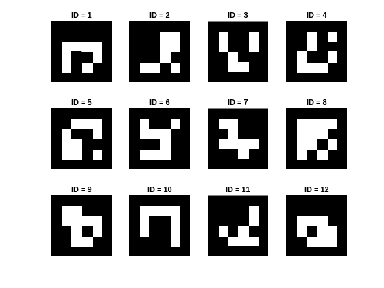
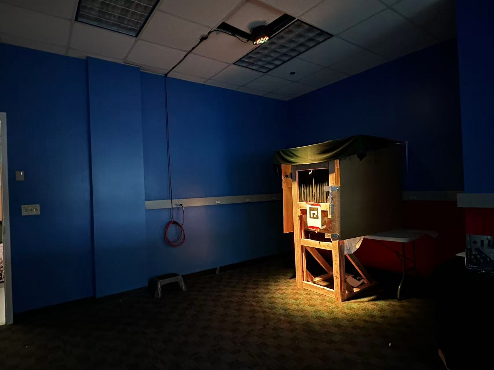
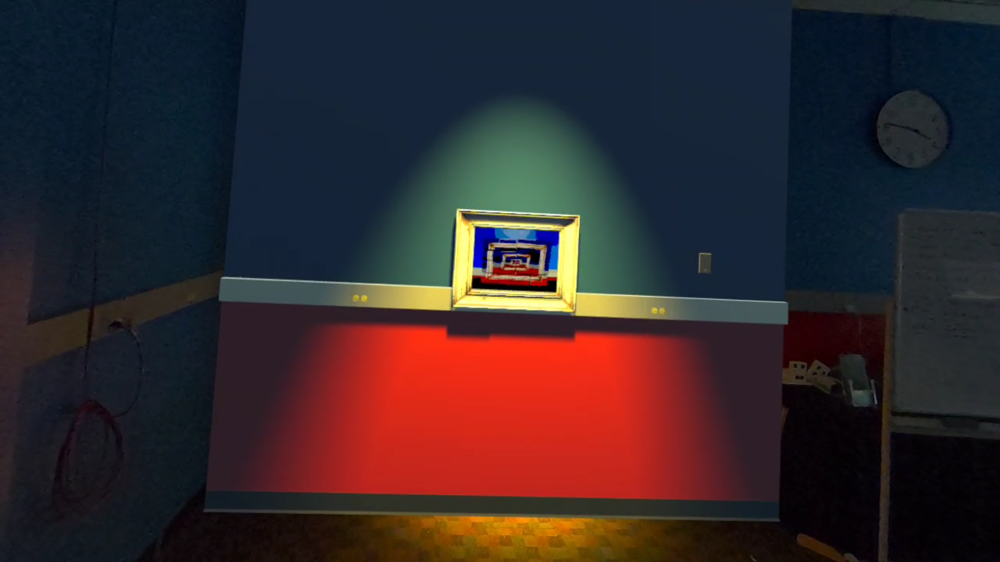

← Back to Portfolio
Overview
Liminal is a multi-room mixed reality experience where guests explore a strange museum and
discover magical interactions that blur the boundary between the physical and virtual worlds.
The project was proposed by Jesse Schell and Dave Culyba as a challenge: can mixed reality experiences extend
beyond a single room?
Most augmented reality experiences are limited to one space because environment tracking quickly breaks down
when the user moves between rooms. Furniture, lighting, and walls change, causing virtual objects to
drift. Even briefly leaving and re-entering a room can result in
several inches and tens of degrees of positional error, breaking immersion.
In March 2025, Meta opened Quest camera data to developers. This raised a new possibility: could camera data
be used to stabilize tracking and enable multi-room mixed reality?
Our goal was not only to explore that technical challenge, but also to build a
magical experience that demonstrates the possibilities of multi-room MR. Our definition of
creating magic is threefold:
- Eliciting amazement: interactions should make guests say “wow.”
- Blending physical and virtual: the experience should rely on both worlds.
- Cross-world interaction: physical objects influence virtual ones and vice versa.
The project name Liminal refers to existing between boundaries - in this case, between the
physical and virtual worlds.
Our Solution
Instead of attempting a general-purpose solution to AR drift, we focused on a scenario common in
location-based entertainment: experiences where the developer also controls the environment.
This allowed us to embed ArUco markers throughout the physical space. When the headset
detects these markers, it can rapidly recalibrate its pose relative to the room, significantly reducing drift.

By placing markers at known positions (outside doors and near points of interest), we created reliable anchor
points that allow the system to maintain alignment across multiple rooms.
Controlling the space also enabled richer interactions. By embedding sensors and physical props within the
environment, we could create moments where the physical and virtual worlds appear to interact. For example, a
guest might use a physical watering can to water a virtual plant, watching it grow as they pour water on it.
Narrative
Technical systems alone do not create magic. The experience also required a narrative framework that guides
the guest to discover interactions naturally.
We took inspiration from online horror such as the Backrooms and SCP. In Liminal, the guest takes on the role
of a new hire to help team Liminal investigate strange events at the ETC. Through the headset
that the Liminal organization gave them, they were able to see into an alternate dimension overlapping the ETC
where a student is trapped, and interact with weird objects straddling the two dimensions.
This setting serves several purposes:
- We did not have to try to explain away the reality that we were in the ETC
- We did not have to ask the guest to ignore the fact that other students were in the hallways
- We were able to lean on existing knowledge of the ETC for other aspects of our story
Interactions
We paid strong attention to our interactions and how they formed a cohesive story. Our priority was
interactions which felt magical - that is, blending the physical and virtual worlds.
Our first interaction centered around a painting. We made a physical frame over which we placed a virtual wall.
On the virtual wall was a painting, aligned to a hole in the frame. Guests had to stick their head through the
painting, where they would see a 3-D (physical) version of it. Rearranging the pieces of this physical
version would also rearrange the pieces in the virtual painting through a hidden camera.


The second interaction involved a physical clock and potted plant. In the pot was a virtual plant, which was
dead. Guests had to rewind time on the clock, watching the plant grow in reverse, physically water the plant,
then move time forward again to watch it grow.
These interactions hit our criteria for magical. Through clever use of a blend of physical and virtual lighting,
it was often difficult to tell what was real and what was virtual. We often had guests tell us
they were surprised certain objects were real. In addition, changing the physical world also changed
the virtual. The blocks in the virtual painting were mirrored by their virtual counterpart, and the
plant responded to input from both turning the clock hands and being watered.
My Contributions
I served as a primary programmer and an experience designer on Liminal, focusing on the technical systems that
enable the project’s magical interactions.
- Integrated ArUco marker detection with Quest camera data to stabilize multi-room tracking.
- Designed and built interactions between the physical and virtual worlds.
- Collaborated with designers to evaluate technical feasibility and adapt experience concepts while
preserving magic and immersion.
- Iterated on physical/virtual interactions to maximize magic with our technology
- Explored techniques for virtual occlusion and object removal to blend virtual elements
with physical surfaces.
Beyond implementing individual systems, I often served as the bridge between engineering and experience design.
As new interactions were proposed, I evaluated their technical feasibility, prototyped solutions, and worked
with artists and designers to adapt concepts around hardware limitations without sacrificing the intended sense
of wonder. Rather than treating technical constraints as obstacles, we used them to shape interactions that were
both achievable and convincing.
Outcome
Liminal successfully provided a proof-of-concept for mixed reality experiences operating on a multi-room scale.
We managed to:
- Deliver a 15 minute multi-room mixed reality experience to 30+ guests
- Develop a system for stabilizing mixed reality across multiple rooms, cutting drift into sub-inch range.
- Design and build several magical interactions blending physical and virtual elements.
- Push the boundaries of current mixed reality, showing a clear benchmark of where it is at and what needs to improve.
Guests were regularly wowed by the smoothness of the interactions and the way we were able to blend the physical
and virtual worlds. Several guests were even surprised that elements they thought were virtual turned out to be
physical! ETC professors praised our narrative design and ability to pair that with our tech. They felt our
tech enabled strong interactions for the guests, resulting in a very unique project.
At the end of the semester, both the experience and the underlying techniques were passed to
Schell Games for potential expansion into future mixed reality projects. In addition, we hope
to take pieces of this experience to conferences such as SIGGRAPH, TEI, and ISMAR.
Liminal demonstrated that stable, multi-room mixed reality experiences are possible when
developers can thoughtfully design both the virtual experience and the physical environment. We achieved
reliable tracking, convincing physical-virtual interactions, and a cohesive narrative spanning multiple rooms.
Liminal also highlighted exciting opportunities for future work. As tracking precision and mixed reality
hardware continue to improve, experiences like ours will be able to blend the physical and virtual worlds even
more seamlessly, enabling increasingly convincing and ambitious interactions.